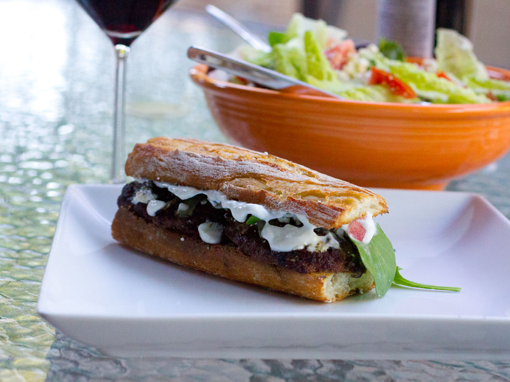

Mediterranean Lamb Burgers

Description
These burgers are juicy and full of flavor. Even people who don't really like lamb
have enjoyed these burgers. You can double the recipe and freeze half of the patties
in wax paper to eat at a later time. Fine to place on the grill frozen (just add to
the cooking time).
Ingredients
- 1 pound ground lamb
- 1/2 pound ground beef
- 3 tablespoons chopped fresh mint
- 1 teaspoon minced fresh ginger root
- 1 teaspoon minced garlic
- 1 teaspoon salt
- 1/2 teaspoon ground black pepper
- 1 container Greek yogurt
- 1/2 lemon, zested
- 1 clove garlic, minced
- 1/2 teaspoon salt
- 1 large sweet onion, cut into 1/2-inch slices
- 4 slices green tomato
- 4 ciabatta sandwich rolls, sliced horizontally
- 1 package feta cheese, sliced
- 8 baby arugula leaves
Steps
- Preheat an outdoor grill for medium-high heat, and lightly oil the grate.
- Mix the ground lamb, ground beef, mint, ginger, 1 teaspoon garlic, 1 teaspoon
salt, and pepper in a large bowl until just combined. Divide evenly into four
portions and shape in to large patties. Set aside. Mix Greek yogurt, lemon zest,
1 clove garlic, and 1/2 teaspoon salt in a bowl; cover and refrigerate.
- Cook the lamb and beef patties on the preheated grill until the burgers are
cooked to your desired degree of doneness, 3 to 4 minutes per side for well done.
An instant-read thermometer inserted into the center should read 160 degrees F
(70 degrees C). Place the slices of onion and green tomato on the grill. Cook until
lightly charred, about 1 minute on each side.
- Spread yogurt sauce over the sliced ciabatta rolls. Assemble each burger by placing
the patty on the the roll, and dividing the feta cheese slices over the patties.
Top with a slice of grilled tomato, grilled onion, and 2 leaves of arugula, followed
by the top half of the roll.